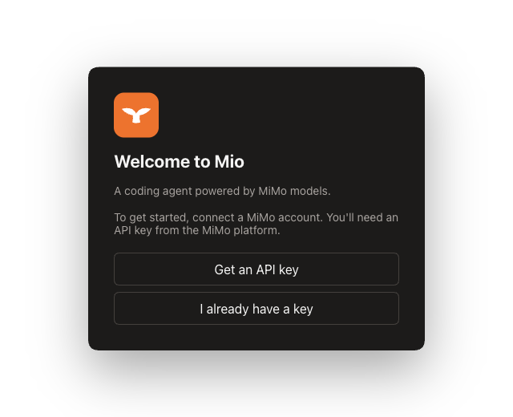

Built to make the MiMo model family first-class participants in the agent runtime — coding, reasoning, multimodal understanding, dictation, and speech, not a generic provider skin.
Latest release
MiMo, not a provider skin.
MiMo models are first-class participants in the agent runtime. Request shaping, model selection, and context packaging are tuned for MiMo rather than treating it as a generic OpenAI-compatible provider.

See, hear, and speak.
Multimodal understanding, audio dictation, and speech synthesis are native MiMo capabilities — designed to shape product behavior, not bolted on after the fact.
The voice you hear was synthesized by Mio’s own built-in TTS.
Hand MiMo your material — watch it read.
Loading the demo…
These are real, pre-captured MiMo responses replayed here — free uploads run in the desktop app.
MIO = MIMO × HARNESS
Below the surface, everything is a plugin. Mio composes MiMo into the DeepSeek Harness runtime — models, tools, voice, and sessions are replaceable capabilities, assembled in configuration rather than forked source.
Capabilities are Cordis plugins — models, tools, voice, sessions — swapped and recomposed at the configuration layer.
Everything the model sees lands in an append-only session log; resume, fork, and replay share the same stream.
New sessions default to mimo-v2.5 with a 1M-token context, and the app connects your MiMo account on first run.
dsh’s native DeepSeek routes ship alongside MiMo — pick per session, swap like any other plugin.
The cheapest capable model, by default.
Stable prefix-cache inputs, visible token and cost accounting, lightweight context by default, and model selection that matches each task to the cheapest capable MiMo model.
Built for the
agent-first era.
Mio keeps project state isolated, so it runs beside upstream OpenCode without mixing local configuration. Project config lives in mio.json, and project-local agents, commands, and plans live under .mio/.
Frequently asked questions
What is Mio?
Mio is a free, open-source native desktop coding agent for the MiMo model family, available for Windows and macOS. It makes MiMo models first-class participants in the agent runtime — coding, reasoning, multimodal understanding, voice dictation, and speech — rather than a generic OpenAI-compatible provider skin.
Which MiMo models and capabilities does it support?
It supports text coding and reasoning, native multimodal understanding of images, PDFs, and video, voice dictation (ASR), and speech generation (TTS), powered by the full MiMo model lineup.
Which platforms does Mio run on?
Mio ships as Electron desktop apps for Windows and macOS. Linux is buildable from source, and there is no terminal (TUI) version planned.
Is Mio an official Xiaomi product?
No. Mio is an independent, community-maintained project. It is not affiliated with, sponsored by, or endorsed by Xiaomi Inc., and it connects to the MiMo model platform purely as a third-party client.
How is it different from a generic OpenAI-compatible client?
Unlike a generic provider skin, Mio tunes request shaping, model selection, and context packaging specifically for MiMo. It adds native multimodal and voice capabilities, stable prefix caching for high cache-hit rates, and visible token and cost accounting that routes each task to the cheapest capable model.
How much does it cost, and how do I get started?
The Mio app is free and MIT-licensed; you pay only for MiMo API usage. Download the latest Windows or macOS build from the Releases page, then add a MiMo API key from platform.xiaomimimo.com — pay-as-you-go (sk-) or a token plan (tp-) — in the app.